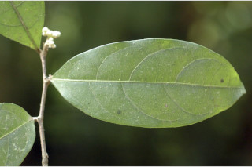
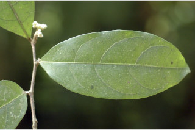
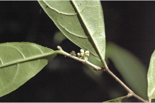
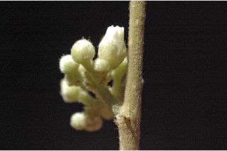
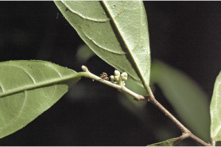
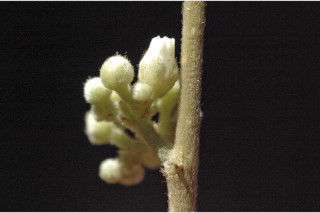

Large shrubs or small trees, up to 5 m tall.
5 ಮೀ. ಎತ್ತರದವರೆಗೆ ಬೆಲೆಯುವ ದೊಡ್ಡ ಪೊದೆಗಳು ಅಥವಾ ಸಣ್ಣ ಮರಗಳು.
5 മീറ്റര്വരെ ഉയരത്തില് വളരുന്ന വലിയ കുറ്റിച്ചെടികളോ ചെറുമരങ്ങളോ ആയി വളരുന്നു.
பெரிய குறுஞ்செடி அல்லது சிறிய மரம், 5 மீ. உயரம் வரை வளரக்கூடியது.
Branchlets slender, terete, pubescent.
ಕಿರುಕೊಂಬೆಗಳು ತೆಳುವಾಗಿದ್ದು,ಆಕಾರದಲ್ಲಿ ದುಂಡಾಗಿರುತ್ತವೆ ಹಾಗೂ ಮೃದುತುಪ್ಪಳದಿಂದ ಕೂಡಿರುತ್ತವೆ.
ലഘുവായി രോമിലവും, ഉരുണ്ടതുമായ ഉപശാഖകള്.
சிறிய நுனிக்கிளைகள் மெல்லியது, குறுக்குவெட்டுத் தோற்றத்தில் வளையம் போன்றது, உரோமங்களுடையது.
Leaves simple, alternate, distichous; stipule linear-lanceolate to 0.5 cm long; petiole 0.1-0.4 cm long, pubescent; lamina 5-11.5 x 2-4 cm, elliptic, apex bluntly acuminate with mucronate tip, base acute, margin entire, chartaceous, sparsely pubescent on midrib and nerves beneath; midrib raised above; secondary_nerves 5-6 gradually curved; tertiary_nerves nearly horizontally reticulo-percurrent.
ಎಲೆಗಳು ಸರಳವಾಗಿದ್ದು, ಪರ್ಯಾಯ ಜೋಡನಾ ವ್ಯವಸ್ತೆಯಲ್ಲಿದ್ದು, ಕಾಂಡದ ಎರಡೂ ಕಡೆ ಎದುರು ಬದರಿನ ಲಂಬ-ಸಾಲಿನಲ್ಲಿರುತ್ತವೆ;ಕಾವಿನೆಲೆಗಳು ರೇಖಾತ್ಮಕ-ಭರ್ಜಿಯ ಆಕಾರದಲ್ಲಿದ್ದು 0.5ಸೆಂ.ಮೀವರೆಗಿನ ಉದ್ದ ಹೊಂದಿರುತ್ತವೆ; ಎಲೆತೊಟ್ಟುಗಳು 0.1 ರಿಂದ 0.4 ಸೆಂ.ಮೀ ಉದ್ದವಿದ್ದು ಮೃದುತುಪ್ಪಳದಿಂದ ಕೂಡಿರುತ್ತವೆ; ಪತ್ರಗಳು 5-11.5 X 2-4ಸೆಂ.ಮೀ ಗಾತ್ರ,ಅಂಡವೃತ್ತದ ಆಕಾರದಲ್ಲಿದ್ದು, ಅಗ್ರದಲ್ಲಿ ಮೊನಚು ಮುಳ್ಳನ್ನು ಹೊಂದಿರುವ ಮೊಂಡಾದ, ಕ್ರಮೇಣ ಚೂಪಾಗುವ ತುದಿ ಮತ್ತು ಚೂಪಾದ ಬುಡವನ್ನು ಹೊಂದಿರುತ್ತವೆ; ಪತ್ರದ ಅಂಚು ನಯವಾಗಿರುತ್ತದೆ;ಮೇಲ್ಮೈ ತೊಗಲನ್ನೋಲುವ ಮಾದರಿಯಲ್ಲಿರುತ್ತದೆ; ಮಧ್ಯನಾಳ ಮತ್ತು ಪತ್ರದ ತಳಭಾಗದ ನಾಳಗಳು ವಿರಳವಾದ ಮೃದುತುಪ್ಪಳದಿಂದ ಕೂಡಿರುತ್ತವೆ, ಮಧ್ಯನಾಳ ಪತ್ರದ ಮೇಲ್ಭಾಗದಲ್ಲಿ ಉಬ್ಬಿರುತ್ತದೆ; ಎರಡನೇ ದರ್ಜೆಯ ನಾಳಗಳು 5-6 ಜೋಡಿಗಳಿದ್ದು, ಕ್ರಮೇಣವಾಗಿ ಬಾಗಿರುತ್ತವೆ;ಮೂರನೇ ದರ್ಜೆಯ ನಾಳಗಳು ಹೆಚ್ಚೂ ಕಡಿಮೆ ಲಂಬರೇಖೆಗೆ ಸಮಕೋನದಲ್ಲಿದ್ದು, ಜಾಲಬಂಧ ನಾಳ ವಿನ್ಯಾಸ ದಲ್ಲಿದ್ದು ಎಲೆದಿಂಡಿಗೆ ಅಡ್ಡವಾಗಿ ಕೂಡುತ್ತವೆ.
ഇലകള് ലഘുവും, ഏകാന്തരക്രമത്തില്, തണ്ടിന്റെ രണ്ടുഭാഗത്തുമാത്രമായി അടുക്കിയിരിക്കുന്നു; അനുപര്ണ്ണങ്ങള്ക്ക് രേഖീയകുന്താകാരമാണ്, 0.5 സെ.മീ വരെ നീളമുണ്ട്; ഇലഞെട്ടിന് 0.1 സെ.മീ മുതല് 0.4 സെ.മീ നീളം, ലഘുരോമിലവുമാണ്; പത്രഫലകത്തിന് 5 സെ.മീ മുതല് 11.5 സെ.മീ വരെ നീളവും 2 സെ.മീ മുതല് 4 സെ.മീ വരെ വീതിയും, ദീര്ഘവൃത്താകാരവുമാണ്, പത്രാഗ്രം അറ്റത്തൊരു ചെറുമുനപ്പോടുകൂടിയ കൂര്ത്തതല്ലാത്ത ദീര്ഘാഗ്രം, പത്രാധാരം നിശിതമാണ്, അവിഭജിതം, കടലാസ്പോലത്തെ പ്രകൃതം, കീഴ്ഭാഗത്ത് മുഖ്യഞരമ്പിലും മറ്റ് ഞരമ്പുകളിലും ലഘുരോമിലമാണ്; മുഖ്യസിര മുകളില് ഉയര്ന്നാണിരിക്കുന്നത്, സാവധാനത്തില് വളഞ്ഞ് പോകുന്ന 5ഓ 6 ഓ ദ്വീതീയ ഞരമ്പുകള്; ഏതാണ്ട് തിരശ്ചീനമായ വിധത്തില് ജാലിത-പെര്കറന്റ് ആയ ത്രിതീയ ഞരമ്പുകള്.
இலைகள் தனித்தவை, மாற்றுஅடுக்கமானவை, இருநெடுக்கு வரிசையிலையடுக்கம் (டைஸ்டிக்கஸ்); இலையடிச்செதில் கோட்டு-ஈட்டி வடிவானது, 0.5 செ.மீ. வரை நீளமானது; இலைக்காம்பு 0.1-0.4 செ.மீ. நீளமானது, உரோமங்களுடையது; இலை அலகு 5-11.5 X 2-4 செ.மீ., நீள்வட்ட வடிவானது, அலகின் நுனி மழுங்கிய அதிக்கூரியது, சிறிது துருத்திய முனையுடையது (மூயூக்கரனேட்), அலகின் தளம் கூரியது, அலகின் விளிம்பு முழுமையானது, சார்ட்டேசியஸ், அலகின் கீழ்புறத்தில் மத்திய மற்றும் அனைத்து நரம்புகளும் ஆங்காங்கே உரோமங்களுடையது; மையநரம்பு மேல்பரப்பில் அலகின் பரப்பைவிட மேல் எழும்பியது; இரண்டாம் நிலை நரம்புகள் 5-6 ஜோடிகள், நன்கு படிப்படியாக வளைந்தது; மூன்றாம் நிலை நரம்புகள் வலைப்பின்னல்-பெர்க்கரண்ட்.
Inflorescence axillary, fascicled cyme; flowers white.
ಪುಷ್ಪಮಂಜರಿ ಅಕ್ಷಾಕಂಕುಳಿನಲ್ಲಿರುವ ಗುಚ್ಛಗಳಲ್ಲಿರುತ್ತವೆ.
പൂങ്കുലകള്, കക്ഷീയ, സൈമുകളാണ്; വെളുത്ത പൂക്കള്.
இலைக்கோணங்களில் காணப்படும் தொகுப்பான சைம்; மலர்கள் வெள்ளை நிறம்.
Drupe 1-2 lobed, pubescent, 2-seeded.
ಕಾಯಿಗಳು ಡ್ರೂಪ್ ಮಾದರಿಯಲ್ಲಿದ್ದು ಒಂದರಿಂದ ಎರಡು ಹಾಲೆಗಳನ್ನು ಹೊಂದಿರುತ್ತವೆ ಹಾಗೂ ಮೃದು- ತುಪ್ಪಳದಿಂದ ಕೂಡಿರುತ್ತವೆ;ಬೀಜಗಳು ಎರಡು.
കായ 2 വിത്തോടുകൂടിയ, 1 ഓ 2 ഓ ഭാഗങ്ങളുളള, ലഘുരോമിലമായ ഡ്രൂപ്പ് ആണ്.
உள்ளோட்டுத்தசைகனி (ட்ரூப்), 1-2 பிளவுகளுடையது, உரோமங்களுடையது, 2-விதைகளையுடையது.

 



 


